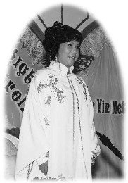

| La tournée de conférences de Maître au Moyen-Orient et en Afrique du Sud |
 Récemment dévastée par deux importants tremblements de terre dépassant 7 sur l'échelle de Richter, la Turquie a finalement pu goûter à la libération éternelle. L'ardent et sincère désir intérieur des Turcs a suscité Maître Suprême Ching Hai à donner la première conférence de Sa tournée au Moyen- Orient et en Afrique du Sud à Istanbul, le 20 novembre 1999.
Située sur une terre s'étendant entre la mer Noire et la mer Méditerranée, Istanbul est une grande ville d'approximativement 10 à 15 millions d'habitants. La ville compte plusieurs mosquées (temples musulmans), chacune étant entourée de quatre tours pointant vers le ciel. Ces tours, appelées "minarets", sont utilisées pour faire les annonces qui rappellent aux Turcs musulmans qu'ils doivent débuter leur rituel de prières, ceci cinq fois par jour.
Des équipes de pratiquants de différents coins du monde ont travaillé ensemble dans plusieurs régions d'Istanbul afin de distribuer des dépliants, faire connaître Maître Ching Hai et la Méthode Guan Yin aux gens, et de communiquer l'information concernant Sa tournée de conférences. La plupart des Turcs que nous avons rencontrés étaient très gentils et acceptaient avec joie les dépliants distribués tout en s'enquérant de Maître et de la Méthode Guan Yin avec grande curiosité. Quelques jeunes Turcs ont même pris des dépliants afin de les distribuer eux-mêmes à leurs compatriotes, tout en conversant avec enthousiasme dans leur propre langue.
Finalement, le jour de la conférence est arrivé, et à 17 h, il y avait déjà salle comble. Les autres participants ont donc dû se rendre dans une autre salle située un étage plus haut, afin de pouvoir regarder Maître sur écran géant. La scène était remplie de fleurs, de fruits et de friandises, et ornée d'arches fabriquées de bois peints en blanc tout comme celles qui sont dans les mosquées musulmanes. Quand Maître est arrivée vêtue d'une longue robe blanche avec d'étincelants ornements de couleur or, la télévision turque et les journalistes ont d'abord demandé une entrevue avant de La laisser s'adresser au public.
Quand Elle a finalement pu faire Son entrée sur la scène, plusieurs personnes L'ont entourée pour La toucher ou pour Lui serrer la main. Avant que Maître ne prenne la parole, les auditeurs se sont levés et ont chanté leur hymne national, créant ainsi une atmosphère de fierté nationale et d'émotion prenante. Maître a immédiatement touché leurs coeurs en les saluant au nom d'Allah et en priant Dieu afin qu'Il aide la Turquie en minimisant les catastrophes et la souffrance du pays. Elle a dit que l'amour était la seule religion, et a offert à toute l'assistance la Méthode Guan Yin qui leur permettrait un accès direct au paradis et au royaume des anges, tel qu'en avait fait l'expérience le Prophète Mahomet dans une grotte à l'extérieur de La Mecque. En récitant une phrase célèbre tirée du Coran, «Soyez un bon invité sur cette Terre», Maître a rappelé à l'auditoire qu'on peut «emprunter» une maison, une voiture, une épouse, un mari, des enfants, etc., mais que pour être de bons invités dans ce monde, on doit se souvenir de la partie manquante, qui est de savoir comment entrer en contact direct avec Dieu.
Dessinant un grand cercle symbolisant Dieu, Maître a démontré que toutes les créations de l'univers font partie de ce cercle et que rien n'existe en dehors de celui-la, pas même le Diable ! Elle a ensuite montré une tablette de papier jaune, un stylo noir, et un stylo rouge, en expliquant que si une âme occupe la tablette jaune, elle se nomme «tablette jaune», si elle occupe le stylo rouge, elle se nomme «stylo rouge», etc., ceci voulant dire que toutes les formes physiques peuvent être différentes, mais que toutes ces formes se trouvent à l'intérieur «cercle» Divin. Et Notre Père le sait et s'occupe de tous et chacun, et chacun fait partie de Lui.
Maître a ajouté que c'est important de ne pas se blesser les uns les autres puisque Dieu sait tout, et que puisque chacun de nous est à l'intérieur du cercle, nous ne pouvons pas nous cacher. Elle a expliqué qu'en fait, il n'y a pas de réincarnation, mais seulement une âme utilisant une forme jusqu'à ce qu'elle soit «kaput», ensuite elle saute dans une autre forme afin de continuer à expérimenter une différente partie de Dieu. Le «saut» d'une forme à l'autre s'appelle la «mort». En tant qu'âme, nous devons nous détacher de la forme physique et des noms auxquels nous les associons afin de se libérer.
Après la conférence de Maître, des centaines de Turcs sont restés pour apprendre la Méthode Pratique ou pour être initiés. Allah avait finalement envoyer une «magnifique» prophétesse afin d'ensemencer l'ère future de la Turquie !